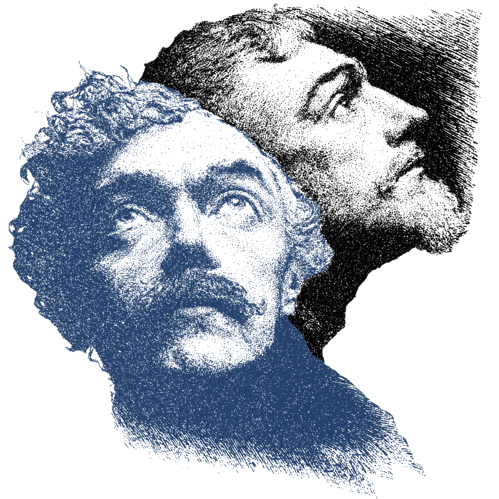
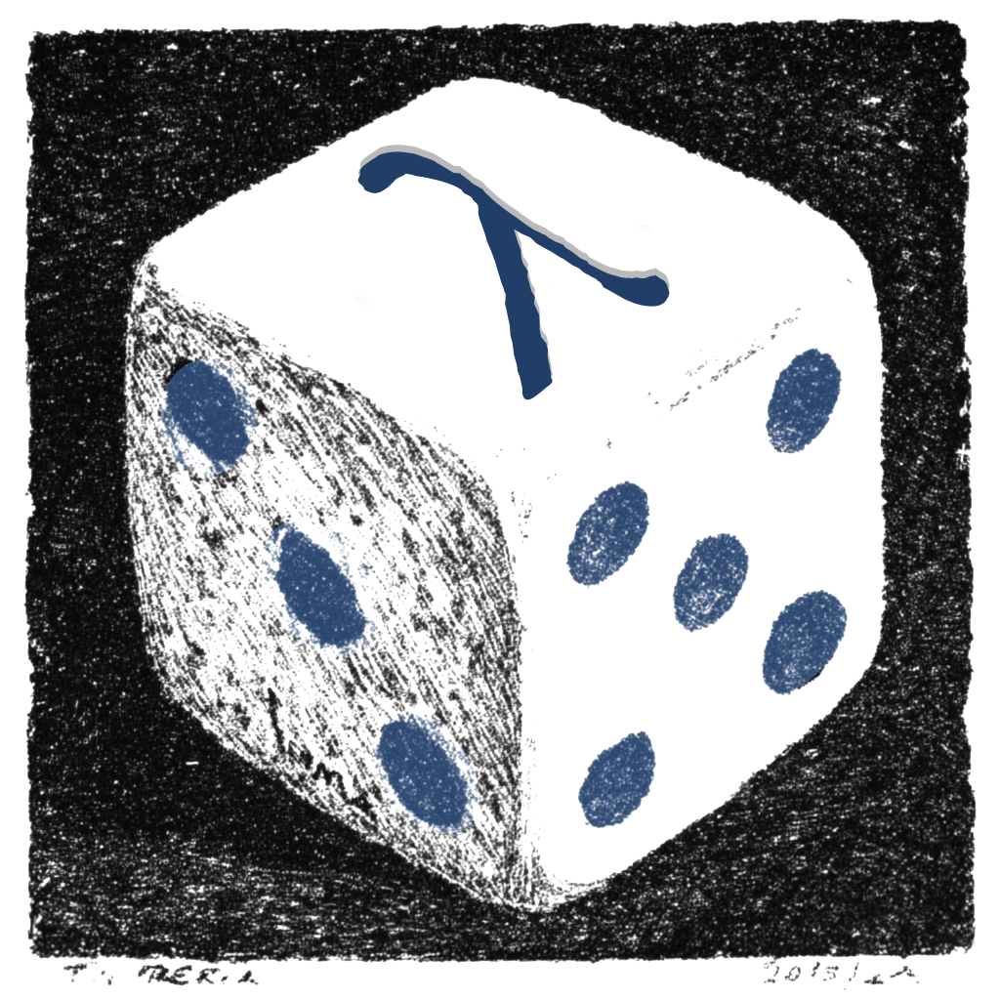

1.3. Laws of composition
In this section, we'll begin combining the basic elements—operators and states—covered in previous sections. As discussed in the introduction, our methods of combination correspond to space, time, and function, in ways we are about to make precise. Roughly speaking, tensor products compose systems in spatial parallel; conjugation uses an operator to evolve an observable or state; and finally, channels generalize both conjugation and measurement, randomly evolving states and observables with a well-behaved set of operators.
Conjugation
Conjugation is familiar from Heisenberg evolution of operators and
change of basis in linear algebra. For a time evolution operator \(U\), an
observable \(A\) evolves as
\[
A \mapsto U^* A U = U \triangleright A.
\]
Thinking of the functional \(\pi(\cdot)\) as the expectation
\(\langle \pi | \cdot |\pi\rangle\), the Heisenberg evolution corresponds
to Schrödinger evolution
\[
\langle \pi | A |\pi\rangle \mapsto \langle \pi | U^* A U|\pi\rangle
= \pi(U \triangleright A) = [U \triangleleft \pi](A).
\]
The infix operators \(\triangleright, \triangleleft\) are a little slicker
than conventional alternatives,The “adjoint action” notation \(\text{Ad}_U\) and its pullback \(\text{Ad}_U^*\).
and in yaw, they are implemented by », «.On macOS, » = Option + \ and « = Shift + Option + \. You can also simply type >> and <<.
For instance, conjugating \(X\) by the Hadamard gate
\(H = (X + Z)/\sqrt{2}\) yields \(Z\), and vice-versa, and simply adds a
phase to \(Y\):
*> H = (X + Z)/sqrt(2) *> H » X Z *> H » Z X *> H » Y -1j*X*Z
Similarly, state conjugation swaps eigenfunctionals of \(X\) and \(Z\):
*> Z | H « char(X,0) 1 *> X | H « char(Z,0) 1
In the usual Schrödinger picture, we take an input state
\(|\pi\rangle\), evolve by a unitary \(|\pi\rangle \mapsto U|\pi\rangle\),
and measure. In our algebraic “Heisenberg picture”, we take
an input state \(\pi\), conjugate by a unitary
\(\pi \mapsto U \triangleleft \pi\), and measure. (We explain the
measurement step below.) The result of two circuits,
\(|\pi\rangle \mapsto U_2 (U_1 |\pi\rangle)\) becomes
\(\pi \mapsto U_2 \triangleleft (U_1 \triangleleft \pi)\). This is
different from
\[
\pi \mapsto (U_2 \triangleright U_1) \triangleleft \pi = (U_2^* U_1
U_2) \triangleleft \pi,
\]
which is an important design pattern in quantum algorithms. Many quantum
algorithms take the form 
The QFT is a change of perspective.
\[
\pi \mapsto (\text{QFT} \triangleright U) \triangleleft \pi
\]
for the quantum Fourier transform \(\text{QFT}\) which, generalizing the
Hadamard \(H\), exchanges \(Z\) for the \(X\) operator (and the \(X\) operator
for \(Z^{d-1}\)) in the generalized Clifford algebra \(\mathcal{A}_d\). This
is invoked via qft(X, Z), though you can formally exchange other
operators as well:
*> $alg = qudit(d) *> W1 = qft(X, Z) *> W1 » Z X *> W1 » X X**(d-1) *> W2 = qft(X, Y) *> W2 » Y X
The initial \(\text{QFT} \triangleleft \pi\) step in the \((\text{QFT} \triangleright U) \triangleleft \pi\) pattern often just changes an eigenfunctional \(\pi^{(Z)}_0\) for an eigenfunctional \(\pi^{(X)}_0\). Sometimes, it's simpler to start in the right place.
Tensor products
When you have two systems governed by algebras \(\mathcal{A}_1\) and \(\mathcal{A}_2\), the joint system is described by a tensor product \(\mathcal{A}_1\otimes \mathcal{A}_2\). Operators on the joint system take the form of (limits of) terms of the form \[ \sum_{i=1}^N c_i A_{1,i} \otimes A_{2,i}, \quad \text{for} \, A_{1,i} \in \mathcal{A}_1, A_{2,i} \in \mathcal{A}_2. \] We can build states on the tensor product from tensor products of states, with \[ S(\mathcal{A}_1)\otimes S(\mathcal{A}_2) \subseteq S(\mathcal{A}_1\otimes \mathcal{A}_2) \] since we can define \[ (\pi_1\otimes\pi_2)(A_1 \otimes A_2) = \pi_1(A_1)\pi_2(A_2). \] However, entanglement means that not every state has this form. For instance, we will construct the EPR state below, with \[ \label{eq:epr} \pi(A) = \frac{1}{2}(\langle 00| + \langle 11|) A (|00\rangle + |11\rangle). \] There is no way to factorize this, as you can show in Exercise 3.2.
In yaw, working with tensor products is simple. First, we can
automatically build tensor products from the global algebra using the
@ infix and tensor powers using the (@n) prefix:
*> $alg = qubit() *> XXX = X @ X @ X *> ZZZ = (@3) Z *> XXX*ZZZ X*Z @ X*Z @ X*Z *> psi3 = (@3) char(Z, 0) *> ZZZ | psi3 1
You can also refer to different algebras, and operators therein, using
the alg.op notation, and explicitly build the QFT over different
algebras with tensor_qft:
*> alg1 = qudit(3) *> alg2 = qudit(5) *> qft1 = qft(alg1.X, alg1.Z) *> qft2 = qft(alg2.X, alg2.Z) *> W = tensor_qft(qft1, qft2)
Finally, conjugation works as expected:
*> W » alg1.Z @ alg2.Z alg1.X @ alg2.X
Note that operators in the global $alg are unlabelled, but otherwise
distinguished by the algebra object they belong to.
Let's see how this works in practice and build an entangling operator. The controlled-\(X\) or \(\text{CNOT}_d\) is an operator on two qudits which applies \(X^k\) on the second qudit when the first is in state \(\pi^{(Z)}_k\). Accordingly, we introduce projectors \(\Pi^{(Z)}_k\) to sift out the states \(\pi^{(Z)}_k\) on the first qudit, with \(X^k\) on the second: \[ \label{eq:8} \text{CNOT}_d = \sum_{k=0}^{d-1}\Pi^{(Z)}_k \otimes X^k. \] Let's implement it in full generality:
*> $alg = qudit(d) *> CNOT = sum(proj(Z,k) @ X**k for k in range(d))
The ordinary \(\text{CNOT}\) is the special case of \(d=2\). We can check it behaves as intended by acting on the functional \(\pi^{(X)}_0\otimes \pi^{(Z)}_0\), which corresponds to a vector \[ |+\rangle |0\rangle = \frac{1}{\sqrt{2}} (|00\rangle + |10\rangle) \overset{\text{CNOT}}{\longmapsto} \frac{1}{\sqrt{2}} (|00\rangle + |11\rangle), \] where the latter is called the EPR state:
*> init = char(X, 0) @ char(Z, 0) *> EPR = CNOT « init
This state is characterized by the fact that, when we restrict to the first or the second qubit, the state is completely mixed, meaning its expectations for \(X\), \(Y\) and \(Z\) are the same as if we averaged over all states. By symmetry, this means they vanish.The fact that \(\text{spec}(X) = \{\pm1\}\) implies the symmetry \(X \mapsto -X\), and so on. Let's check:
*> [op | EPR for op in [X @ I, Y @ I, Z @ I]] [0.0, 0.0, 0.0] *> [op | EPR for op in [I @ X, I @ Y, I @ Z]] [0.0, 0.0, 0.0]
Note that X @ I is a partial measurement of \(X\) on the first qubit,
and so forth. You can explore the qudit version in Exercise 3.2. On the
other hand, joint measurements of the same operator are always perfectly
correlated:
*> [op | EPR for op in [X @ X, Y @ Y, Z @ Z]] [1, -1, 1]
To check this spooky correlation more explicitly, we need to introduce the machinery of measurement and channels.
Channels and measurement
A channel is a sum of conjugators that maps the identity to itself:
\[
\label{eq:9-op}
\mathcal{C}_{\mathfrak{L}} = \sum_{\lambda\in \mathfrak{L}}
K_\lambda\, \triangleright, \quad \mathcal{C}_{\mathfrak{L}}[I] =
\sum_{\lambda\in \mathfrak{L}} K_\lambda^* K_\lambda = I.
\]
The operators \(K_\lambda\) are called Kraus operators. The dual state
channel is the corresponding sum of state conjugators, and dual to the
property of preserving the identity (called unitality) is
the property of preserved trace:In the situations where this is defined, e.g. density matrices on a finite-dimensional GNS space. The proof here uses linearity and cyclicity of the trace, \(\mbox{tr}[AB]=\mbox{tr}[BA]\).
\[
\label{eq:9-state}
\mathcal{C}^{\mathfrak{L}} = \sum_{\lambda\in \mathfrak{L}}
K_\lambda\, \triangleleft, \quad
\mbox{tr}\,\mathcal{C}^{\mathfrak{L}}[\pi] = \sum_{\lambda\in
\mathfrak{L}} \mbox{tr}\big[ K_\lambda\pi K_\lambda^* \big] =
\mbox{tr}[\pi].
\]
The channel can simply be applied, as in the case of errors. The
depolarizing channel \(\Delta_\alpha\), usually written in the state
form, mixes a qubit state with the maximally mixed state \(I/2\):Again, this is in the setting of density matrices on a finite-dimensional GNS space.
\[
\Delta_\alpha[\pi] = (1-\alpha)\pi + \frac{\alpha}{2} I.
\]
As you can show in Exercise 3.3, this has Kraus operators
\[
K_0 = \sqrt{1 - \frac{3\alpha}{4}} I, \quad K_i =
\sqrt{\frac{\alpha}{4}}\sigma_i,
\]
where we recall that \(\sigma_1 = X\), \(\sigma_2 = Y\) and \(\sigma_3 = Z\).
We can define the state channel easily in yaw using stChannel:
*> $alg = qubit() *> sigma = [X, 1j*X*Z, Z] *> def stDpl(alpha): ... K0 = sqrt(1-3*alpha/4)*I ... Ks = [sqrt(alpha/4)*sigma[i] for i in range(3)] ... return stChannel([K0]+Ks) *> dplZ = stDpl(0.2)(char(Z,0)) *> Z | dplZ 0.8
We can also compute the effect of the channel on operators directly with
opChannel:
*> def opDpl(alpha): ... K0 = sqrt(1-3*alpha/4)*I ... Ks = [sqrt(alpha/4)*sigma[i] for i in range(3)] ... return opChannel([K0]+Ks) *> opDpl(0.2)(Z) 0.8*Z
By analogy with Unix, pipe syntax allows us to push operators through
a chain of channels, and optionally, to evaluate in a state at the end:
*> Z | opDpl(0.2) | opDpl(0.8) | stDpl(0.4)(char(Z, 0)) 0.096
The final state evaluation is in fact another form of operator channel,Albeit one that sends operators to complex numbers. so our notation is consistent.
So far, we've treated channels as black boxes that process inputs
undisturbed. But we can open up and look inside! This is the act of
measurement, and it effectively chooses a Kraus operator at random
\[
\label{eq:opMeasure}\tag{1.3.1}
A \overset{\text{evolve}}{\longmapsto}
\mathcal{C}_{\mathfrak{L}}[A] = \sum_{\lambda\in \mathfrak{L}}
K_\lambda^*A K_\lambda \overset{\text{observe}}{\longmapsto}
\frac{1}{C_\lambda} K_\lambda^*A K_\lambda,
\]
according to the Lüders rule. Similarly:
\[
\label{eq:stMeasure}\tag{1.3.2}
\pi \overset{\text{evolve}}{\longmapsto}
\mathcal{C}^{\mathfrak{L}}[\pi] = \sum_{\lambda\in \mathfrak{L}}
K_\lambda \triangleleft \pi \overset{\text{observe}}{\longmapsto}
\frac{1}{C_\lambda} (K_\lambda \triangleleft \pi).
\]
Here, \(C_\lambda\) is a normalization constant that depends on the state
\(\pi\) we observe in; to ensure the output state remains normalized, we haveThis follows from \[C_\lambda^{-1} (K_\lambda \triangleleft \pi)(I) = C_\lambda^{-1} \pi (K_\lambda^* K_\lambda) = 1.\]
\[
\label{eq:10}
C_\lambda = \pi (K_\lambda^* K_\lambda).
\]
The fact that the operator channel is unital, i.e. maps \(I\) to itself,
means that the constants sum to unity: 
Observing a channel is a roll of the Kraus.
\[
\sum_{\lambda\in\mathfrak{L}} C_\lambda = \pi
\left(\sum_{\lambda\in\mathfrak{L}} K_\lambda^* K_\lambda\right) =
\pi(I) = 1,
\]
with positivity implying that each \(C_\lambda \geq 0\). This looks a lot
like probability, and indeed, Born's rule tells us that \(C_\lambda\) is
the probability of observing Kraus operator \(\lambda\).
In yaw, measurement can either be performed with respect to operators
\(\eqref{eq:opMeasure}\) via opMeasure, or states \(\eqref{eq:stMeasure}\)
via stMeasure. We can illustrate with the \(Z\)-measurement of a qubit
in the \(\pi^{(X)}_0\) state:
*> Ks = [proj(Z, 0), proj(Z, 1)] *> psi = char(X, 0) *> psiNew, outcome = stMeasure(Ks, psi)() *> outcome 1 *> Z | psiNew -1
The function opMeasure works in a similar way. A useful shortcut when
the Kraus operators are projectors of some observable is given by the
simpler measure function:
*> psiNew, outcome = measure(Z, psi)()
We can now revisit the entanglement example:
*> init = char(X, 0) @ char(Z, 0) *> EPR = CNOT « init *> [measure(X@X, EPR)()[1] for _ in range(10)] [0, 0, 0, 0, 0, 0, 0, 0, 0, 0] *> [measure(Z@Z, EPR)()[1] for _ in range(10)] [0, 0, 0, 0, 0, 0, 0, 0, 0, 0] *> [measure(X@Z, EPR)()[1] for _ in range(10)] [1, 1, 1, 0, 0, 1, 0, 1, 1, 1]
Every time we measure the same observable on both qubits, we get the same answer; different observables get different answers.If we get outcomes \(a, b \in \{0, 1\}\), we return the sum \(a \oplus b\) modulo \(2\).
Coda
We've now seen three elementary ways to compose quantum algorithms: conjugation, tensor products, and channels. Indeed, these are the three basic combinators in the standard approach to quantum computing, which takes a fiducial initial state \(|0^n\rangle\) over multiple qubits (tensor product), evolves by a circuit \(|0^n\rangle\mapsto U |0^n\rangle\) (conjugation), and finally measures in a fixed basis (channels). We have given the toy example of building and measuring an entangled state, but although simple, it hopefully begins to hint at the elegance and power of the algebraic approach. To make those hints fully manifest, however, we need to start thinking about real algorithms.